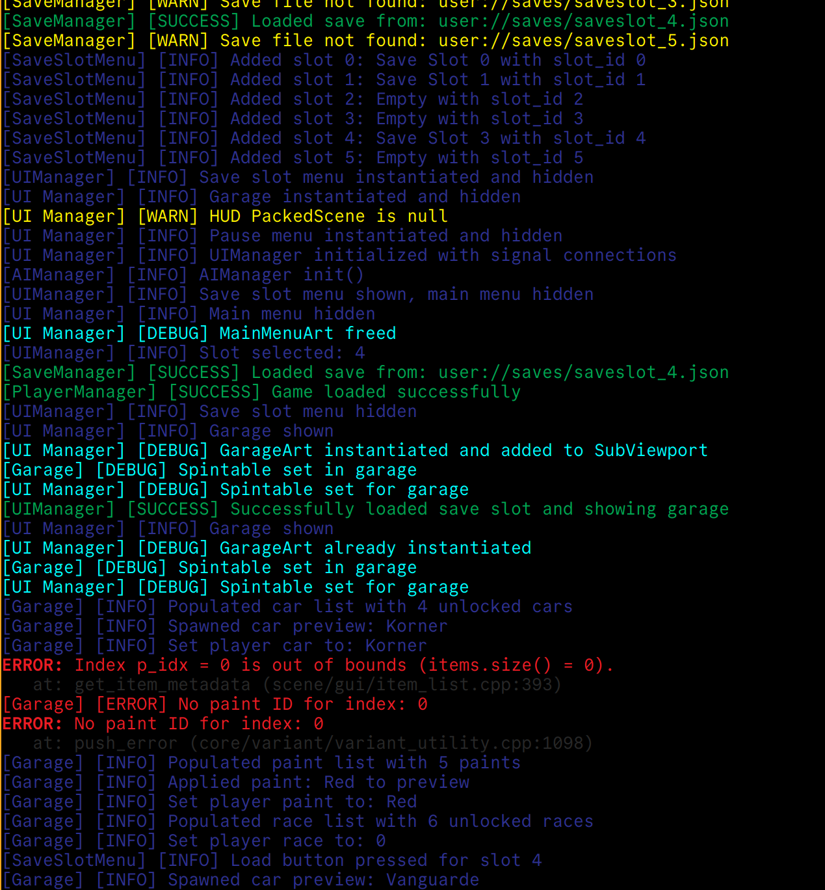
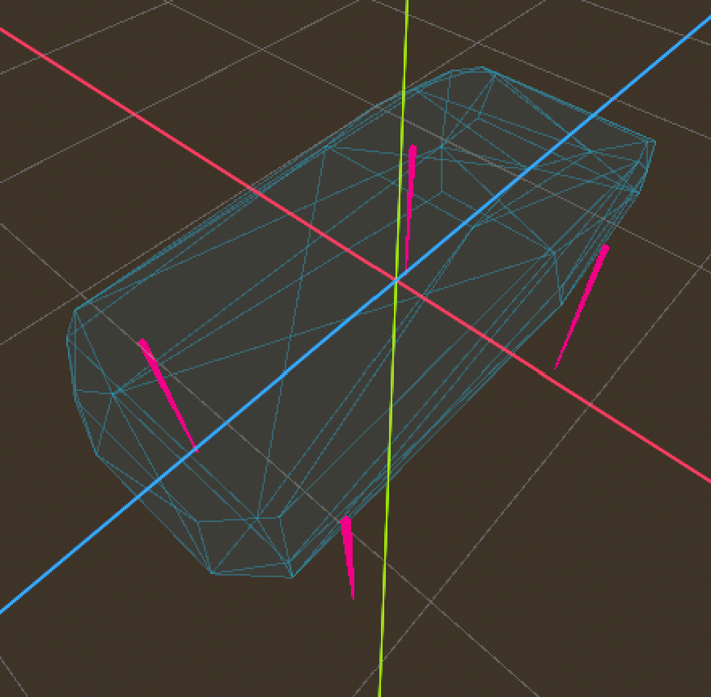
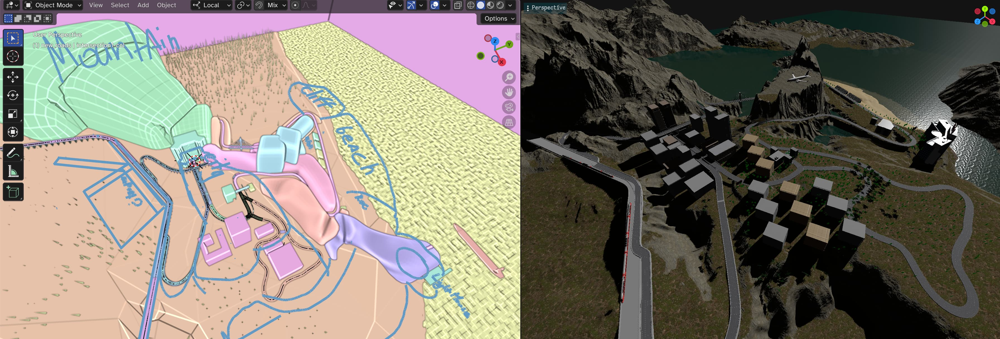
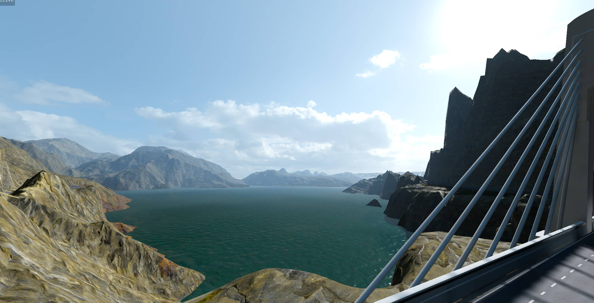

TrackStar
Portfolio Project 2 Course: Racing Game in Godot 4.4
Project Overview
As part of a student group project, I contributed to the development of a racing game built in the Godot Engine. I proposed to create a Ridge Racer-type game, with focus on drifting and nature scenery. This means unique arcade-style drifting physics and unlike in a racing simulator the drifting around corners in this game should increase your speed to facilitate overtaking AI cars.
My Role and Contributions
I took on the roles of Code Lead, Level Designer, and Level Artist, I took on a multifaceted role, both technical implementation and creative design. Below, I reflect on my contributions, the challenges faced, and the skills I honed during this work.
Though not formally appointed as the project lead, I assumed a leadership role due to my experience with Godot, game design, and code architecture. I delegated tasks to team members based on their strengths, hoping for efficient progress while maintaining a cohesive vision.
My primary coding contributions included designing a Manager System to handle the game's core functionalities:
- UI Manager: Handles scene transitions for menus and race states.
- Tour Manager: Loads game maps dynamically.
- Player Manager: Tracks player state (e.g., name, score, laps, timers).
- Save Manager: Save/load with data validation.
UI Manager node structure.
Example of the Logger output.
Physics-Based Car Simulation
The fun part of the project for me was implementing a car using a RigidBody and raycast-based wheels. The car drives by applying forces at the raycasts, which simulate wheels.
Spring Force and Suspension: Raycasts return a collision points with the ground every frame, and then I apply a force based on how far the spring is from its resting point. The force is scaled by the spring's stiffness to make the car's suspension feel bouncy, like real shocks.
Sideways Slip and Drifting: Car is stabilized by applying lateral forces to counteract sideways slip. Only the rear wheels provide forward velocity, simulating rear-wheel-drive dynamics. At higher speeds, the lateral force curve is tuned according to a grip curve to permit increased slip, enabling dynamic and controlled drifting
Use of Curves: The car's forces are scaled by curves that map speed to a force multiplier. As speed climbs, the top speed falloff curve gradually limits acceleration to prevent infinite speeding up. Steering force is zero at near-zero speeds, reflecting how wheels need to roll to turn effectively. The tire slip curve decreases tyre grip in at higher speeds, to allow for drifting.
The car collider with ray-casts.
Level Design and Art
As a Level Designer and Level Artist, I crafted the game's environment using the Terrain3D plugin in Godot. This plugin allowed me to sculpt a heightmap with brushes and apply textures to create a visually rich racing track. I also focused on establishing a realistic atmosphere through careful lighting, fog, and environmental effects.
In Blender, I modeled roads and their colliders to ensure player stays on the road. Additionally, I wrote scripts to export a list of assets I want in glTf and a Bézier curve to JSON exporter for AI paths. Plus a complementary Godot plugin to import JSON data and generate path nodes in Godot.
Side-by-side view of a Blender plan and its in-game counterpart.
Atmospheric fog demonstration.

AI paths, ready for export.
Challenges and Lessons Learned
There were no overwhelming technical challenges for me personally; I intentionally chose a straightforward genre and design to focus on group work. The main challenge was aligning the team's timelines and skillsets. I learned the value of structured team onboarding: setting clear roles, deadlines, check‑ins and consequences. I learned that even student projects benefit from a careful selection process, including informal "interviews" to ensure shared commitment.
Conclusion
Although the project was not completed due to varying levels of team engagement, I delivered fully functional core systems and became more skilled at working with Godot during this project. I will place more importance on choosing peers that are passionate about gamedev for the upcoming Portfolio Project 3 course.